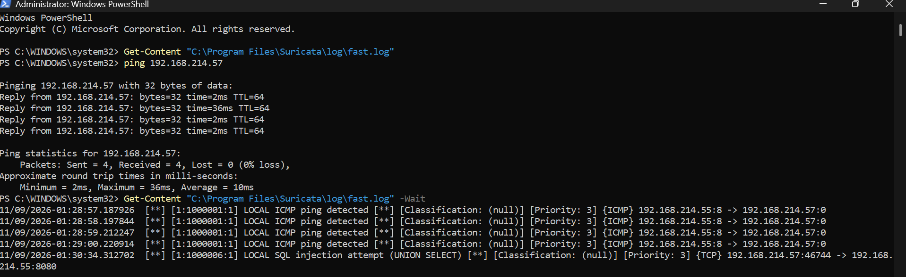
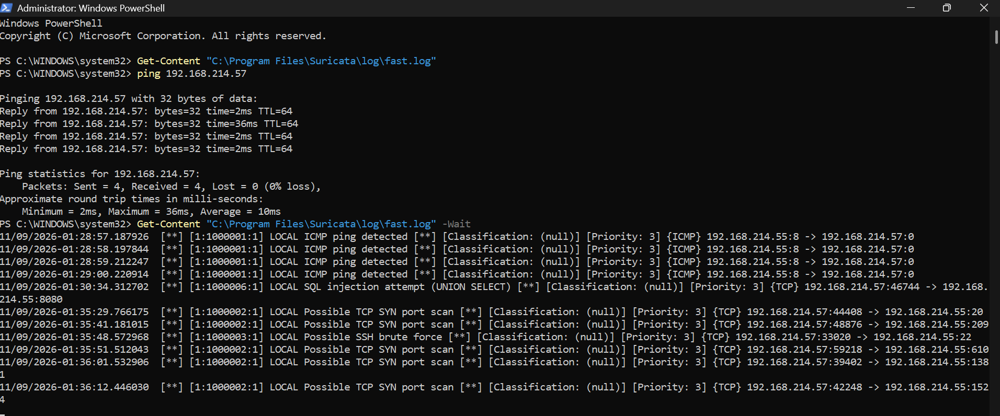

Test results and alerts
On 9 November 2026 I ran Suricata on my laptop (192.168.214.55) while it was connected to my phone's hotspot. The phone (192.168.214.57) was the second device. A Python web server on port 8080 gave the laptop something to attack.
| Test | Tool | Rule | Alerts |
|---|---|---|---|
| Ping | laptop pinging the phone | 1000001 ICMP ping | 4 |
| SQL injection URL | phone browser | 1000006 SQL injection | 1 |
| Port scan, ports 1 to 1000 | Fing / Net Analyzer | 1000002 SYN port scan | 7 |
| Connection to port 22 during the scan | Fing / Net Analyzer | 1000003 SSH brute force | 1 |
13 alerts across 4 of the 6 rules. Rules 1000004 (sqlmap user-agent) and 1000005 (directory traversal) loaded correctly but were not tested.
Captured alerts (fast.log)
11/09/2026-01:28:57.187926 [**] [1:1000001:1] LOCAL ICMP ping detected [**] [Classification: (null)] [Priority: 3] {ICMP} 192.168.214.55:8 -> 192.168.214.57:0
11/09/2026-01:28:58.197844 [**] [1:1000001:1] LOCAL ICMP ping detected [**] [Classification: (null)] [Priority: 3] {ICMP} 192.168.214.55:8 -> 192.168.214.57:0
11/09/2026-01:28:59.212247 [**] [1:1000001:1] LOCAL ICMP ping detected [**] [Classification: (null)] [Priority: 3] {ICMP} 192.168.214.55:8 -> 192.168.214.57:0
11/09/2026-01:29:00.220914 [**] [1:1000001:1] LOCAL ICMP ping detected [**] [Classification: (null)] [Priority: 3] {ICMP} 192.168.214.55:8 -> 192.168.214.57:0
11/09/2026-01:30:34.312702 [**] [1:1000006:1] LOCAL SQL injection attempt (UNION SELECT) [**] [Classification: (null)] [Priority: 3] {TCP} 192.168.214.57:46744 -> 192.168.214.55:8080
11/09/2026-01:35:29.766175 [**] [1:1000002:1] LOCAL Possible TCP SYN port scan [**] [Classification: (null)] [Priority: 3] {TCP} 192.168.214.57:44408 -> 192.168.214.55:20
11/09/2026-01:35:41.181015 [**] [1:1000002:1] LOCAL Possible TCP SYN port scan [**] [Classification: (null)] [Priority: 3] {TCP} 192.168.214.57:48876 -> 192.168.214.55:209
11/09/2026-01:35:48.572968 [**] [1:1000003:1] LOCAL Possible SSH brute force [**] [Classification: (null)] [Priority: 3] {TCP} 192.168.214.57:33020 -> 192.168.214.55:22
11/09/2026-01:35:51.512043 [**] [1:1000002:1] LOCAL Possible TCP SYN port scan [**] [Classification: (null)] [Priority: 3] {TCP} 192.168.214.57:59218 -> 192.168.214.55:610
11/09/2026-01:36:01.532906 [**] [1:1000002:1] LOCAL Possible TCP SYN port scan [**] [Classification: (null)] [Priority: 3] {TCP} 192.168.214.57:39402 -> 192.168.214.55:1381
11/09/2026-01:36:12.446030 [**] [1:1000002:1] LOCAL Possible TCP SYN port scan [**] [Classification: (null)] [Priority: 3] {TCP} 192.168.214.57:42248 -> 192.168.214.55:1524
11/09/2026-01:36:22.941285 [**] [1:1000002:1] LOCAL Possible TCP SYN port scan [**] [Classification: (null)] [Priority: 3] {TCP} 192.168.214.57:54086 -> 192.168.214.55:4557
11/09/2026-01:36:33.244884 [**] [1:1000002:1] LOCAL Possible TCP SYN port scan [**] [Classification: (null)] [Priority: 3] {TCP} 192.168.214.57:40686 -> 192.168.214.55:7464
The full file is evidence/fast.log in the repository.
Screenshots


Findings and limits
- Signature-based detection catches what a rule describes and nothing else, and encrypted traffic hides the HTTP fields the web rules read.
- The ping alerts show the laptop pinging the phone.
HOME_NETcovers all private addresses, so outbound traffic to the phone also matched. A tighterHOME_NETwould alert only on traffic aimed at the laptop. - The port scan also touched port 22, so the SSH rule fired as well. In a real network this overlap needs tuning to reduce noise.